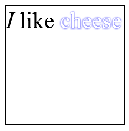

Before you start
To understand this article, it is recommended to be comfortable with JavaScript, the Canvas API and the DOM API
It's even better if you are also familiar with SVG.
Although it's not trivial (for security reasons), it's possible to draw DOM content—such as HTML—into a canvas. This article, derived from this blog post by Robert O'Callahan, covers how you can do it securely, safely, and in accordance with the specification.
An overview
You can't just draw HTML into a canvas. Instead, you need to use an SVG image containing the content you want to render. To draw HTML content, you'd use a <foreignObject> element containing the HTML, then draw that SVG image into your canvas.
Step-by-step
The only really tricky thing here—and that's probably an overstatement—is creating the SVG for your image. All you need to do is create a string containing the XML for the SVG and construct a Blob with the following parts.
- The MIME media type of the blob should be "image/svg+xml".
- The
<svg>element. - Inside that, the
<foreignObject>element. - The (well-formed) XHTML itself, nested inside the
<foreignObject>.
By using an object URL as described above, we can inline our HTML instead of having to load it from an external source. You can, of course, use an external source if you prefer, as long as the origin is the same as the originating document.
Example
HTML
<canvas id="canvas" style="border:2px solid black;" width="200" height="200"> </canvas>
JavaScript
//Edge Blob polyfill https://developer.mozilla.org/en-US/docs/Web/API/HTMLCanvasElement/toBlob
if (!HTMLCanvasElement.prototype.toBlob) {
Object.defineProperty(HTMLCanvasElement.prototype, 'toBlob', {
value: function (callback, type, quality) {
var canvas = this;
setTimeout(function() {
var binStr = atob( canvas.toDataURL(type, quality).split(',')[1] ),
len = binStr.length,
arr = new Uint8Array(len);
for (var i = 0; i < len; i++ ) {
arr[i] = binStr.charCodeAt(i);
}
callback( new Blob( [arr], {type: type || 'image/png'} ) );
});
}
});
}
var canvas = document.getElementById('canvas');
var ctx = canvas.getContext('2d');
var data = '<svg xmlns="http://www.w3.org/2000/svg" width="200" height="200">' +
'<foreignObject width="100%" height="100%">' +
'<div xmlns="http://www.w3.org/1999/xhtml" style="font-size:40px">' +
'<em>I</em> like ' +
'<span style="color:white; text-shadow:0 0 2px blue;">' +
'cheese</span>' +
'</div>' +
'</foreignObject>' +
'</svg>';
data = encodeURIComponent(data);
var img = new Image();
img.onload = function() {
ctx.drawImage(img, 0, 0);
console.log(canvas.toDataURL());
canvas.toBlob(function(blob) {
var newImg = document.createElement('img'),
url = URL.createObjectURL(blob);
newImg.onload = function() {
// no longer need to read the blob so it's revoked
URL.revokeObjectURL(url);
};
newImg.src = url;
document.body.appendChild(newImg);
});
}
img.src = "data:image/svg+xml," + data
The example above will produce the following
| Screenshot | Live sample |
|---|---|
|  |
The data variable is set up with the content of the SVG image (which in turn includes the HTML) we want to draw into our canvas.
Then we create a new HTML <img> element by calling new Image(), append data, allocate an object URL, and draw the image into the context by calling drawImage() on load.
Security
You might wonder how this can be secure, in light of concerns about the possibility of reading sensitive data out of the canvas. The answer is this: this solution relies on the fact that the implementation of SVG images is very restrictive. SVG images aren't allowed to load any external resources, for example, even ones that appear to be from the same domain. Resources such as raster images (such as JPEG images) or <iframe>s have to be inlined as data: URIs.
In addition, you can't include script in an SVG image, so there's no risk of access to the DOM from other scripts, and DOM elements in SVG images can't receive input events, so there's no way to load privileged information into a form control (such as a full path into a file <input> element) and render it, then pull that information out by reading the pixels.
Visited-link styles aren't applied to links rendered in SVG images, so history information can't be retrieved, and native themes aren't rendered in SVG images, which makes it harder to determine the user's platform.
The resulting canvas should be origin clean on most browsers except internet explorer and mobile (android and ios) browsers meaning you can call toBlob(function(blob){…}) to return a blob for the canvas, or toDataURL() to return a Base64-encoded data: URI.
Embedding Svg in Canvas
HTML
<canvas id="canvas" style="border:2px solid black;" width="500" height="500">
<rect id="test" x="50" y="20" width="100" height="100" style="fill:red;stroke-width:3;stroke:rgb(0,0,0)" ></rect>
<rect id="test2" x="150" y="170" width="100" height="100" style="fill:pink;stroke-width:3;" ></rect>
<text id="text" fill="red" font-size="45" font-family="Verdana" x="50" y="286">SVG</text>
<script>
document.documentElement.addEventListener('keydown',function(evt){
var KEY = { w:87, a:65, s:83, d:68 };
var moveSpeed = 10;
var ele = document.getElementById('test');
var y = parseInt(ele.getAttribute('y'),10);
var x = parseInt(ele.getAttribute('x'),10);
var width = parseInt(ele.getAttribute('width'),10);
var height = parseInt(ele.getAttribute('height'),10);
Update = false;
switch (evt.keyCode){
case KEY.w:
ctx.clearRect(x-2,y-2,width+4,height+4);
y -= moveSpeed;
ele.setAttribute('y',y);
svgDrawRect(ele);
break;
case KEY.s:
ctx.clearRect(x-2,y-2,width+4,height+4);
y += moveSpeed;
ele.setAttribute('y',y);
svgDrawRect(ele);
break;
case KEY.a:
ctx.clearRect(x-2,y-2,width+4,height+4);
x = x - moveSpeed;
ele.setAttribute('x',x);
svgDrawRect(ele);
break;
case KEY.d:
ctx.clearRect(x-2,y-2,width+4,height+4);
x = x + moveSpeed;
ele.setAttribute('x',x);
svgDrawRect(ele);
break;
}
},false);
document.documentElement.addEventListener('keyup',function(evt){
Update = true;
}, false)
</script>
</canvas>
<button onclick="console.log(canvas.toDataURL());">To data url</button>
Javascript
var canvas = document.getElementById("canvas");
var ctx = canvas.getContext("2d");
var Update = true;
window.MutationObserver = window.MutationObserver
|| window.WebKitMutationObserver
|| window.MozMutationObserver;
var id,
// create an observer instance
observer = new MutationObserver(function(mutations) {
var canvas = document.getElementById("canvas");
var ctx = canvas.getContext("2d");
if(Update){
ctx.beginPath();
ctx.clearRect(0,0,canvas.width,canvas.height);
draw();
}
}), config = { attributes: true, subtree: true };
// pass in the element you wanna watch as well as the options
observer.observe(canvas, config);
// later, you can stop observing
// observer.disconnect();
function svgDrawRect(element){
var y = 0, cx = 0, stroke = false;
if(element.getAttribute('x')){cx = element.getAttribute('x')}
if(element.getAttribute('y')){y = element.getAttribute('y')}
if(element.getAttribute('style')){
var test = element.getAttribute('style').split(";");
for(var p = 0; p < test.length; p++){
switch(test[p].split(":")[0].toLowerCase()){
case "fill":
ctx.fillStyle = test[p].split(":")[1];
break;
case "stroke":
ctx.strokeStyle=test[p].split(":")[1];
stroke = true;
}
}
}
ctx.fillRect(cx,y,element.getAttribute('width'),element.getAttribute('height'));
if(stroke){
ctx.strokeRect(cx,y,element.getAttribute('width'),element.getAttribute('height'));
}
ctx.stroke();
}
function svgDrawText(element){
ctx.font = element.getAttribute("font-size")+"px "+element.getAttribute("font-family");
ctx.strokeText(element.textContent,element.getAttribute("x"),element.getAttribute("y"));
}
function draw(){
var xmlDoc = new DOMParser().parseFromString(canvas.outerHTML, "image/svg+xml");
var x = xmlDoc.documentElement.childNodes;
for (i = 0; i < x.length ;i++) {
//html add textnodes before and after elements ignore them.
if(x[i].nodeName == "#text" || x[i].nodeName == "script" || x[i].nodeName == "style"){
continue;
}
switch(x[i].nodeName){
case "rect":
svgDrawRect(x[i]);
break;
case "text":
svgDrawText(x[i]);
break;
}
}
}
draw();
Adding svg animations to a canvas
Html
<canvas id="canvas" width="500" height="500">
<svg id="animatedSvg" width="500" height="500" viewPort="0 0 500 500" version="1.1"
xmlns="http://www.w3.org/2000/svg">
<rect id="rect" x="10" y="10" width="100" height="100">
<animate attributeType="XML" attributeName="x" from="-100" to="120"
dur="10s" repeatCount="indefinite"/>
</rect>
</svg>
</canvas>
Javascript
setInterval(function(){
var canvas = document.getElementById("canvas");
var ctx = canvas.getContext("2d");
if(Update){
ctx.beginPath();
ctx.clearRect(0,0,canvas.width,canvas.height);
draw(canvas);
}
},10);
function draw(ele){
var xmlDoc = new DOMParser().parseFromString(ele.outerHTML, "image/svg+xml");
var x = xmlDoc.documentElement.childNodes;
for (i = 0; i < x.length ;i++) {
//html add textnodes before and after elements ignore them.
if(x[i].nodeName == "#text" || x[i].nodeName == "script" || x[i].nodeName == "style"){ continue; }
switch(x[i].nodeName)
{
case "rect":
svgDrawRect(x[i]);
break;
case "text": svgDrawText(x[i]);
break;
case "svg": draw(x[i]);
break;
}
}
}
Drawing HTML
Since SVG must be valid XML, as opposed to HTML5's html serialization, you need to parse HTML to get the well-formed output of the HTML parser. The following code is the easiest way to parse HTML.
var doc = document.implementation.createHTMLDocument('');
doc.write(html);
// You must manually set the xmlns if you intend to immediately serialize
// the HTML document to a string as opposed to appending it to a
// <foreignObject> in the DOM
doc.documentElement.setAttribute('xmlns', doc.documentElement.namespaceURI);
// Get well-formed markup
html = (new XMLSerializer()).serializeToString(doc);
See also
- Canvas
- Canvas tutorial
- Drawing DOM content to canvas (blog post)
- rasterizeHTML.js, an implementation following this post
- Drawing math equations into a canvas, using TeXZilla.The watcher event handler will not notice the changes to the "x" value since the dom value is only upated in the browser when the browser needs that perticular value. The solution is to to instead use the setInterval event called every few milliseconds.The watcher event handler will not notice the changes to the "x" value since the dom value is only upated in the browser when the browser needs that perticular value. The solution is to to instead use the setInterval event called every few milliseconds.It is also necessary to update the draw function from before.